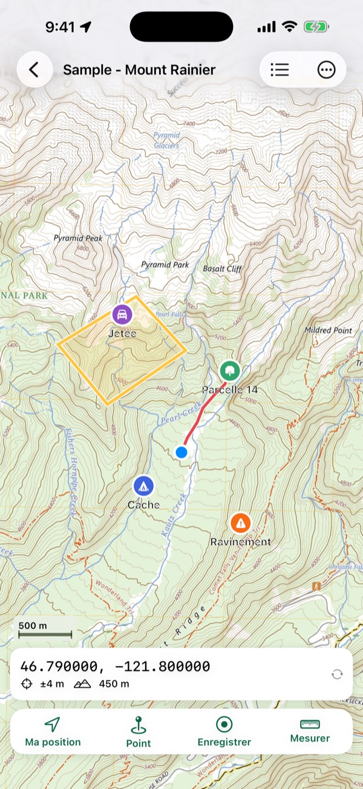
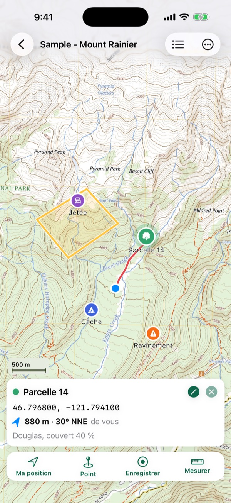
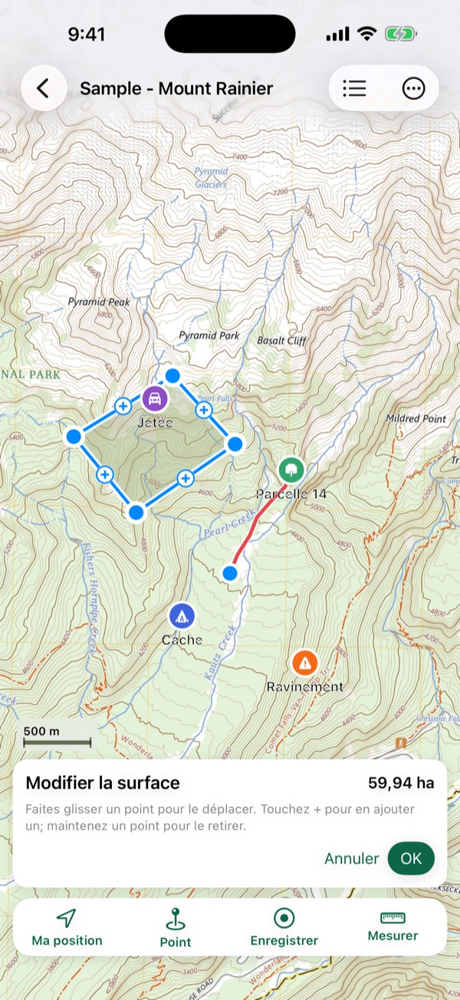
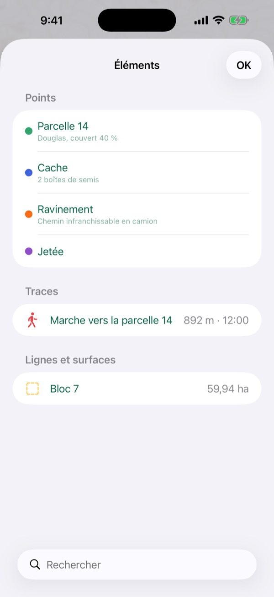

Vos propres cartes, hors ligne, avec vous dessus.
Ouvrez un PDF géoréférencé ou un GeoTIFF (plan de bloc de coupe, carte de feu, carte topo de RNCan ou de l'USGS, carte faite dans ArcGIS ou QGIS) et Mapsheet affiche votre position, sans réseau. Ajoutez des points avec photos, enregistrez des traces, mesurez des surfaces et envoyez des cartes à toute votre équipe d'un coup.

Ce que fait Mapsheet
Vos cartes, de partout
PDF géoréférencés d'ArcGIS, QGIS, Global Mapper, RNCan et l'USGS, y compris les fichiers GeoPDF®, les atlas de plusieurs pages et les pages pivotées. GeoTIFF, et TIFF zippés avec leur fichier world.
Vous sur la carte
Votre position, sa précision et votre direction, en mode avion. Un récepteur GNSS Bluetooth qui fournit la position à iOS fonctionne aussi. La liste des cartes indique sur lesquelles vous vous trouvez.
Points, traces et surfaces
Points avec symboles, couleurs, notes et photos. Traces qui continuent avec l'écran verrouillé. Lignes et surfaces en mètres, hectares, pieds, milles ou acres, et coins que vous pouvez déplacer sur le terrain.
Marchez vers un point
Distance et azimut entre vous et un centre de parcelle, une cache ou un coin de bloc. Allez à une coordonnée tapée en degrés décimaux, degrés et minutes, UTM ou MGRS/USNG.
Les systèmes des équipes
UTM sur tous les datums courants, systèmes provinciaux (MTM, Lambert Québec et Ontario, Albers C.-B., 10TM Alberta), zones MGA d'Australie, et toute projection définie par la carte elle-même.
Sortez vos données
GPX, KML, KMZ et CSV avec colonnes UTM dans tous les forfaits; shapefiles pour ArcGIS et QGIS avec Équipe. Importez GPX, KML, KMZ, CSV et shapefiles zippés sur n'importe quelle carte.



Nouveau dans la version 1.1
Les cartes de feu du jour par code QR 1.1
Lisez le code QR d'une carte d'intervention, ou collez un lien, et Mapsheet affiche les cartes du dossier de l'équipe sur le partage de fichiers national des feux. Choisissez celles qu'il vous faut; suivez le dossier pour voir les nouvelles cartes chaque jour. Les liens directs vers des PDF et les listes de cartes des organismes fonctionnent aussi.
Cartes gratuites près de vous 1.1
Cartes US Topo et topo historiques de l'USGS, FSTopo du Forest Service, feuillets topo de RNCan, topos de la Nouvelle-Galles du Sud et du Queensland et Topo50 de LINZ, selon l'endroit où vous êtes. Chacune se télécharge directement chez son éditeur.
Cartes aériennes et topo hors ligne 1.1
Téléchargez l'imagerie aérienne ou une carte topographique d'un secteur pour la garder sur votre téléphone : imagerie et topo de l'USGS pour les États-Unis, imagerie aérienne de LINZ pour la Nouvelle-Zélande. Utilisez-la comme n'importe quelle carte, avec le crédit de la source.
Équipe pour toute votre organisation 1.1
Les entreprises et organismes peuvent acheter des places Mapsheet Équipe pour leur personnel dans Apple Business Manager, et les attribuer ou les reprendre au fil des équipes.
Ces extras en ligne sont facultatifs et ne se connectent que lorsque vous demandez un téléchargement. Les cartes et l'imagerie viennent d'organismes publics, telles qu'ils les publient; voir les conditions d'utilisation.
Pensé pour les équipes
Paquets d'équipe Équipe
Le chef d'équipe envoie plusieurs cartes, points, traces et photos en un seul fichier par AirDrop, Messages ou Mail. L'équipe l'ouvre gratuitement (3 cartes à la fois avec le forfait gratuit, toutes avec Terrain) : les points qu'elle a déjà sont conservés, les nouveaux sont ajoutés.
Moyenne GPS Équipe
Faites la moyenne de votre position sur 30 secondes pour un centre de parcelle ou un coin, avec l'erreur type affichée.
Shapefiles Équipe
Points, lignes et surfaces en shapefiles zippés avec leur .prj, prêts pour le bureau SIG.
Pour la foresterie et le reboisement, les feux de forêt, l'arpentage, la conservation et la chasse : quiconque apporte une carte faite pour le travail là où il n'y a pas de réseau.
Forfaits
Gratuit
3 cartes à la fois (un atlas de plusieurs pages compte pour une), avec tous les outils de terrain et l'exportation GPX, KML et CSV. Usage professionnel permis.
Terrain
Cartes illimitées. 59,99 $ US par an avec deux semaines gratuites, ou 9,99 $ US par mois pour le travail saisonnier.
Équipe
Tout ce qu'offre Terrain, plus les paquets d'équipe, la moyenne GPS et l'exportation en shapefile, par personne. 129,99 $ US par an avec deux semaines gratuites, ou 19,99 $ US par mois.
Vos cartes ne se verrouillent jamais. Si un forfait prend fin, vous gardez toutes vos cartes et tout ce qu'elles contiennent; vous ne pouvez simplement plus en ajouter au-delà de trois. Prix américains; l'App Store affiche le prix en dollars canadiens. Annulez quand vous voulez dans les Réglages de l'iPhone.
Guides (en anglais)
Des réponses claires pour ceux qui travaillent avec des cartes sur le terrain, chacune liée à ses sources.
- What is a geospatial PDF?A geospatial PDF is a map PDF that stores its own coordinates. Learn the two encodings, how to check a file, and how ArcGIS Pro, QGIS and the USGS make them.
- Where can I download free topo maps as geospatial PDFs?Where to download free topographic maps for offline GPS use, from USGS US Topo, historical topos and topoBuilder to NRCan's legacy sheets and NSW topo maps.
- How do UTM and MGRS coordinates work?How UTM zones, eastings and northings, MGRS and US National Grid references and map datums work, with worked examples from USGS and FGDC sources.
- How accurate is phone GPS in the field?Phone GPS accuracy in open sky and under forest canopy, from GPS.gov and peer-reviewed field tests, and how waiting, averaging and external receivers help.
Questions et aide
Quelles cartes fonctionnent dans Mapsheet?
Les PDF géoréférencés (y compris les fichiers GeoPDF®) et les GeoTIFF, aussi dans un zip. Un simple PDF sans coordonnées ne peut pas afficher votre position : exportez-le de votre SIG avec le géoréférencement activé.
Faut-il du réseau cellulaire ou du Wi-Fi?
Non. Vos cartes sont sur votre iPhone ou iPad, et le GPS fonctionne partout où le ciel est visible, en mode avion aussi. Il ne faut une connexion que pour télécharger une carte.
D'où viennent les cartes gratuites?
Des organismes qui les publient : l'U.S. Geological Survey, le Forest Service des États-Unis, Ressources naturelles Canada, NSW Spatial Services, le gouvernement du Queensland et Land Information New Zealand. Mapsheet les répertorie (dans la version 1.1); chaque carte se télécharge directement chez son éditeur, telle qu'il la publie.
Mon entreprise peut-elle acheter Équipe pour toute l'équipe?
Oui. Les organisations peuvent acheter des places Mapsheet Équipe dans Apple Business Manager et les attribuer à leur personnel, ou chaque personne peut s'abonner dans l'app.
Puis-je utiliser Mapsheet au travail?
Oui, avec tous les forfaits, y compris le gratuit. Il n'y a pas de licence professionnelle à part.
Mapsheet est-il gratuit?
Oui, pour 3 cartes à la fois avec tous les outils de terrain. Mapsheet Terrain (59,99 $ US par an ou 9,99 $ US par mois) ajoute les cartes illimitées; Mapsheet Équipe (129,99 $ US par an ou 19,99 $ US par mois, par personne) ajoute les paquets d'équipe, la moyenne GPS et l'exportation en shapefile. Les forfaits annuels commencent par deux semaines gratuites.
Qu'arrive-t-il à mes cartes si mon forfait prend fin?
Rien : vous gardez toutes vos cartes, points, traces et photos. Vous ne pouvez simplement plus ajouter de cartes au-delà des trois gratuites tant que vous ne vous réabonnez pas.
Comment mettre des cartes sur mon téléphone?
Partagez le fichier vers Mapsheet depuis Mail, Fichiers, Drive ou AirDrop, ou touchez + dans la liste des cartes. Votre chef d'équipe peut envoyer plusieurs cartes d'un coup dans un paquet d'équipe.
Sur quels appareils fonctionne-t-il?
iPhone et iPad avec iOS 17 ou plus récent.
Mes données sont-elles partagées?
Non. Cartes, points, traces, photos et position restent sur votre appareil. Pas de compte, pas de serveur. Voir la politique de confidentialité.
Toujours bloqué? Écrivez à laddothis at gmail dot com en décrivant ce qui s'est passé et votre appareil. Réponse en moins d'un jour.